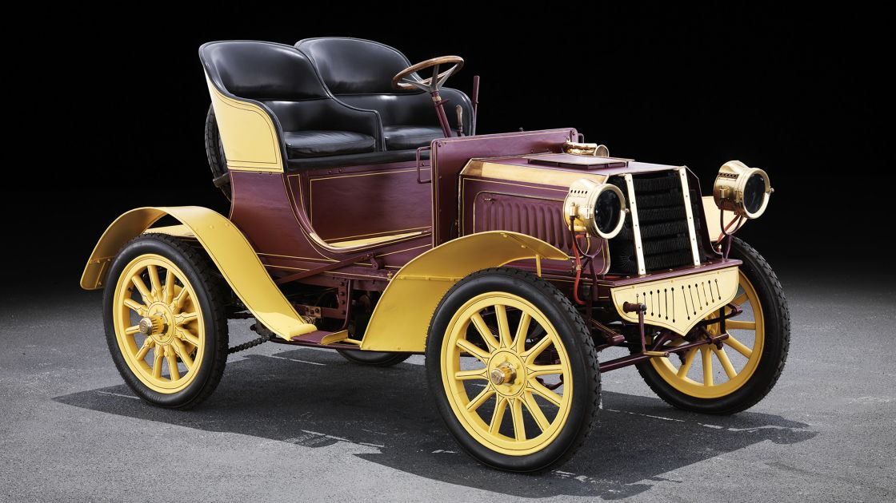
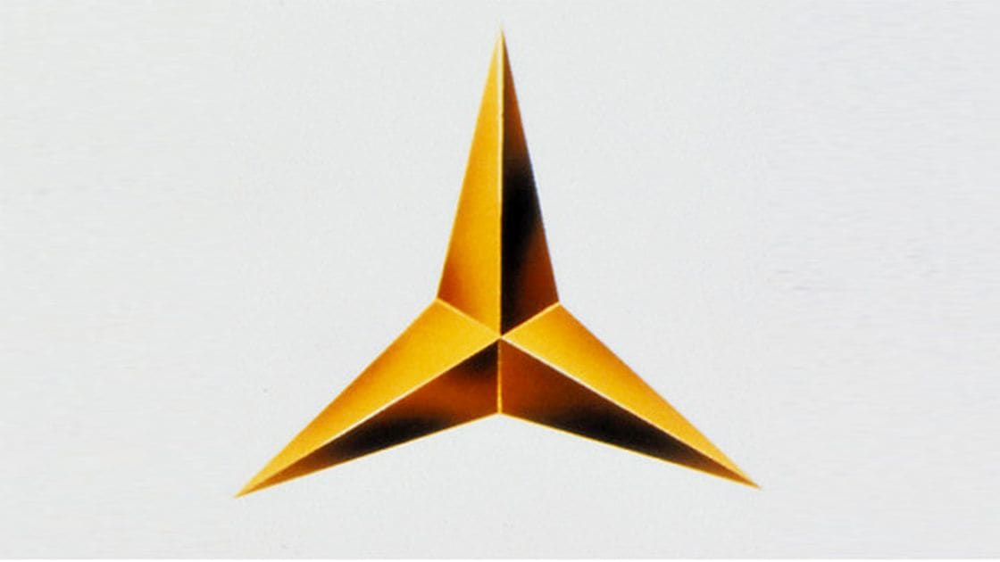
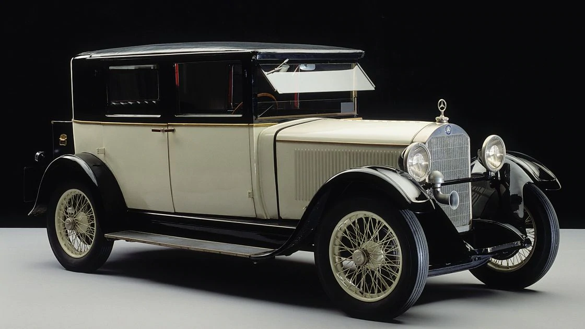
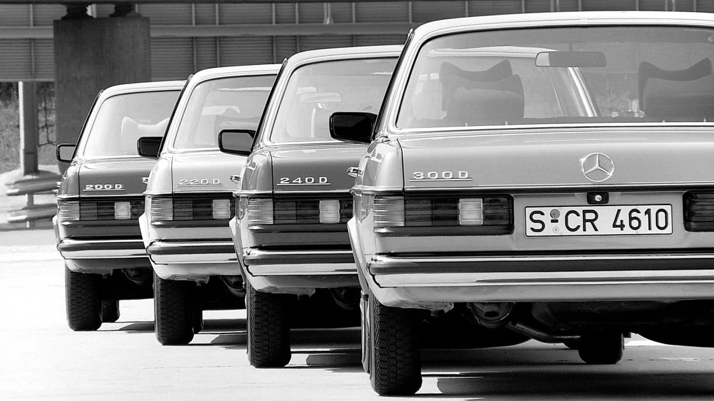
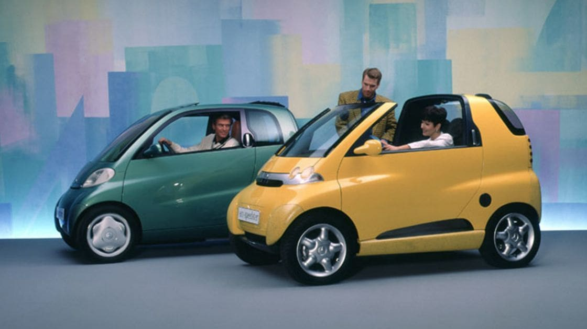
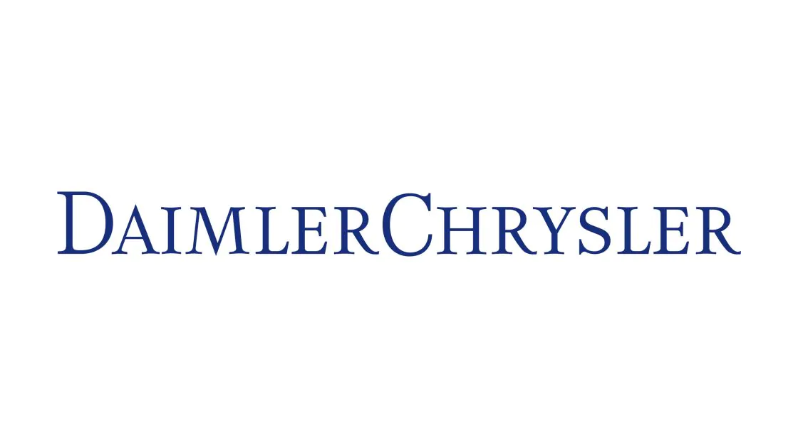

l'Histoire depuis 1886.
L'Histoire, de ses débuts en 1886 jusqu'au au 1er février 2008, date à laquelle Mercedes-Benz France voit le jour.
Histoire par date
L'Histoire
Toute une Histoire
L'Histoire
Toute une Histoire
 1886 KARL Benz dépose un brevet de voiture à moteur GOTTLIEB |
1902 La marque Mercedes est déposée. |
1909 L'étoile Mercedes est déposée comme marque. |
| 1926 Daimler et Benz fusionnent pour devenir Daimler-Benz AG. |
1986 100 ans de Daimler-Benz. |
 1994 Création de Micro Compact Car AG. |
| 1997 Inauguration de smartville à Hambach. |
 1998 DaimlerBenz et Chrysler fusionnent pour créer DaimlerChrysler. |
2000 Prise de participation (34%) dans le capital de Mitsubishi. |
L'Histoire de Mercedes-Benz
L'histoire de Mercedes-Benz
L'histoire de Mercedes-Benz
La passion est notre moteur.
1887
Rencontre entre Gottlieb Daimler et Emile Levassor associé à René Panhard.
1902
Le nom Mercedes est déposé comme marque commerciale.
1913
Mercedes ouvre un magasin sur l'avenue des Champs-Elysées.
1930
Importation assurée par les ateliers Wautrin.
1950
Charles Delecroix devient importateur et distributeur de Mercedes-Benz.
1970
Naissance juridique de Mercedes-Benz France SA, filiale de Daimler-Benz AG.
1977
Le siège de Mercedes-Benz France s'installe à Rocquencourt.
1999
Mercedes-Benz France et Chrysler France fusionnent pour créer DaimlerChrysler France.
2007
Séparation de Daimler et Chrysler.
1er février 2008
Création de Mercedes-Benz France.
2015
Déménagement de Mercedes-Benz France à Montiny-Le-Bretonneux, nouveau siège social : Star Center.
2019
Ouverture du CitySpot Mercedes-Benz au centre commercial Parly2.
Lancement du premier SUV 100% électrique de la marque à l’Etoile, inaugurant le label technologique EQ, nouvel emblème de l’électrification chez
Mercedes-Benz.
Arrêt de la production de smart thermique, les citadines seront désormais exclusivement électrique.
2020
Lancement smart 100% électrique
. Les origines
Les origines
1902
Le nom Mercedes est déposé comme marque commerciale.
1913
Mercedes ouvre un magasin sur l'avenue des Champs-Elysées.
1930
Importation assurée par les ateliers Wautrin.
1950
Charles Delecroix devient importateur et distributeur de Mercedes-Benz.
1970
Naissance juridique de Mercedes-Benz France SA, filiale de Daimler-Benz AG.
1977
Le siège de Mercedes-Benz France s'installe à Rocquencourt.
1999
Mercedes-Benz France et Chrysler France fusionnent pour créer DaimlerChrysler France.
2007
Séparation de Daimler et Chrysler.
1er février 2008
Création de Mercedes-Benz France.
2015
Déménagement de Mercedes-Benz France à Montiny-Le-Bretonneux, nouveau siège social : Star Center.
2019
Ouverture du CitySpot Mercedes-Benz au centre commercial Parly2.
Lancement du premier SUV 100% électrique de la marque à l’Etoile, inaugurant le label technologique EQ, nouvel emblème de l’électrification chez
Mercedes-Benz.
Arrêt de la production de smart thermique, les citadines seront désormais exclusivement électrique.
2020
Lancement smart 100% électrique
. Les origines
Les origines
|
|